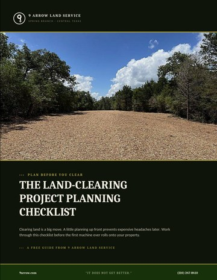

The Best Time of Year to Clear Land in Texas
You can clear land in Texas year-round, but some seasons make the job cleaner, faster, and safer for your trees. For most Central Texas properties, the cooler, drier months from late fall through winter are the sweet spot.
Is there really a best season?
Yes. In the dormant season the ground is typically drier and firmer, so equipment moves efficiently and leaves fewer ruts. Brush is thinner without summer growth, sightlines are better, and there's far less concern with ticks, snakes, and heat for the crew. The work simply goes more smoothly.
Watch the oak wilt window
If you have live oaks or red oaks, timing matters for tree health. The Texas A&M Forest Service recommends avoiding wounding or pruning oaks from February through June, when the beetles that spread oak wilt are most active. If your project involves oaks you want to keep, clearing in the cooler months — outside that window — protects them.
Late fall and winter hit the trifecta: drier ground, dormant brush, and a safer window for your oaks.
What about the wet season?
Spring and early summer bring soft ground that's prone to rutting and compaction, plus thick growth that slows production. It's not off-limits — forestry mulching handles green material fine — but you may pay for extra time, and you'll want to plan around storms.
Plan around burn bans and book ahead
One more reason mulching shines in Texas: it never needs a burn pile, so summer burn bans don't stop your project. Whatever method you choose, the dormant season is the busy season — get on the calendar early. Use our free planning checklist to get your property ready before the crew arrives, and read how clearing is priced so there are no surprises.
Frequently asked questions
When is the best time to clear land in Texas?
The cooler, drier months from late fall through winter are usually best. The ground is firmer for equipment, brush is thinner, and it's outside the spring oak wilt window — making the job cleaner, faster, and safer for your trees.
Why should I avoid clearing around oaks in spring?
From February through June, the beetles that spread oak wilt are most active, so wounding or cutting oaks during that window risks infection. If you want to keep your oaks, clear in the cooler months instead.
Can you clear land in the summer in Texas?
Yes. Forestry mulching works year-round and needs no burn pile, so summer burn bans don't stop it. Just expect softer ground and thicker growth, which can add time to the job.

The Land-Clearing Project Planning Checklist
The full pre-project checklist — goals, the 811 utility locate, drainage, permits, debris, and how to vet your crew.
Get the free guide (PDF)Instant PDF · sent to your inboxIt does not get better.
Planning a clearing project this year?
Get on the calendar early — tell us about your land and we'll find the right window.
Request an Estimate